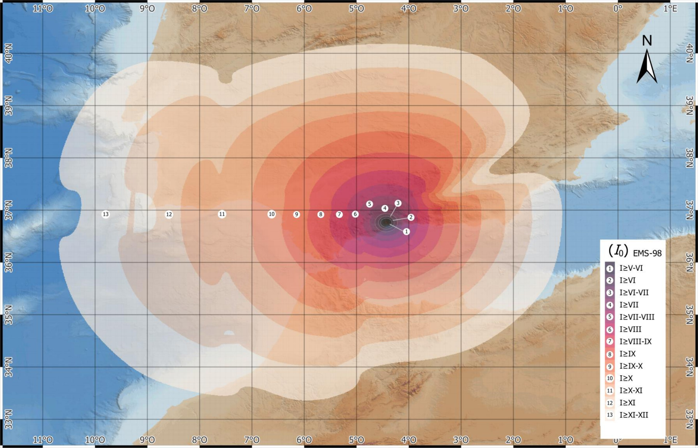

Presa de Casasola
Alerta sismica
Estado actual
Sin analizar
Lee sismos del IGN o pega un boletin para calcular el estado.Lectura
IGN o boletin
Lectura IGN automatica
GitHub Actions actualiza el listado del IGN periodicamente. No hace falta serve.ps1.
Coordenadas de la presa
Detalle
Resultado elegidoEvento-
Magnitud-
Intensidad Io-
Umbral extra.-
Umbral esc. 0-
Distancia-
Motivos
Datos extraidos
Mapa
Intensidades
-
Lat - | Lon - | UTM -
Sismos IGN
Sin lectura automaticaPulsa "Leer IGN" para analizar los terremotos recientes.
Criterio aplicado
La aplicacion mantiene el criterio conservador: cuando hay duda, eleva el aviso antes que infravalorarlo.